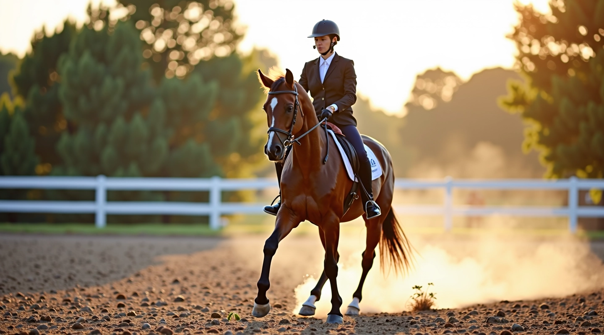

من نحن في أكاديمية الأهرام للفروسية
نحن متخصصون في تدريب تغيير قدم العدو في ركوب الخيل. منذ عام 2020، نعمل على تطوير مهارات الفرسان بطريقة علمية واحترافية

الأساس الذي نبني عليه
أكاديمية الأهرام للفروسية المحدودة تقدم برامج تدريب متخصصة تركز على الأساليب العملية والفعالة. نحن نؤمن بأهمية الممارسة المنظمة والتوجيه المباشر من المدربين ذوي الخبرة
التخصص والخبرة
يعمل معنا فريق من المدربين المتخصصين في تقنيات تغيير قدم العدو. المدربون لديهم خبرة في التدريب في التعامل مع خيول مختلفة المستويات والقدرات
منهج تدريبي منظم
نتبع برامج تدريب متقدمة مصممة حسب احتياجات كل فارس وفرسه. البرنامج يتضمن تقنيات أساسية وتطبيقات عملية تدريجية تحسن الأداء
التقييم والمتابعة
نقدم تقييمات دورية لتتبع التقدم ومعالجة أي مشاكل تقنية. هذا يساعد الفرسان على فهم نقاط قوتهم والمجالات التي تحتاج تحسين
كيف نعمل
نحن نركز على التفاصيل الدقيقة والتدريب المنهجي. كل جلسة تدريب مصممة لتحقيق أهداف محددة مع الحفاظ على صحة الحصان وسلامة الفارس
التقييم الأولي
نبدأ بتقييم شامل لمستوى الفارس والحصان. نفهم القدرات الحالية والأهداف المرغوبة لتصميم برنامج مخصص يناسب احتياجاتكم
التدريب التدريجي
نطبق تقنيات التدريب بشكل تدريجي وآمن. كل خطوة مبنية على السابقة، مما يضمن تقدماً ثابتاً وفهماً عميقاً للمهارات
التطبيق العملي
نركز على التطبيق العملي للمهارات في ظروف مختلفة. الفرسان يتعلمون كيفية تنفيذ تغيير قدم العدو بثقة وكفاءة في حالات متعددة
ما نقدمه في أكاديمية الأهرام للفروسية
منذ تأسيسنا عام 2020، نقدم برامج تدريب في تغيير قدم العدو. نحن نعمل مع فرسان من مستويات مختلفة، من المبتدئين إلى المتقدمين، ونساعدهم على إتقان هذه المهارة المعقدة
ما يميزنا
برنامج 8 أسابيع شامل
نقدم برنامج تدريب منظم مدته 8 أسابيع يغطي جميع جوانب تغيير قدم العدو، من الأساسيات إلى التقنيات المتقدمة
تحليل الأخطاء الشائعة
نساعد الفرسان على تحديد ومعالجة الأخطاء الشائعة. فهم هذه الأخطاء يسرع من التقدم ويحسن الأداء بشكل ملحوظ
تقنيات تدريب متقدمة
نستخدم أحدث التقنيات والطرق المثبتة في التدريب. هذا يساعد على تحقيق نتائج أفضل بوقت أقل وبطريقة آمنة
إرشادات أساسية واضحة
نوفر شرحاً واضحاً وتفصيلياً لكل خطوة. الفرسان يفهمون السبب وراء كل تقنية وليس فقط الطريقة
التزامنا تجاهك
في أكاديمية الأهرام للفروسية، نحن ملتزمون بتقديم تدريب عالي الجودة وآمن. نعمل مع كل فارس وحصان بناءً على احتياجاتهم الخاصة. نؤمن بأن النجاح يأتي من التدريب المنظم والمتابعة الدقيقة والتوجيه المستمر. نحن هنا لدعمك في رحلتك نحو إتقان تغيير قدم العدو، سواء كنت تبدأ من الصفر أو تحسن مهاراتك الحالية
معلومات مهمة
المحتوى المقدم على هذا الموقع هو لأغراض تعليمية وإعلامية فقط. التدريب على الفروسية وتقنيات تغيير قدم العدو تتطلب إشرافاً مباشراً من مدربين مؤهلين. النتائج الفردية تختلف بناءً على الخبرة السابقة والممارسة المنتظمة والقدرات الطبيعية. نوصي دائماً باستشارة مدرب متخصص قبل البدء في أي برنامج تدريب جديد. سلامة الفارس والحصان هي أولويتنا الأساسية